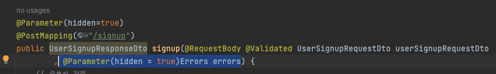

30일, Swagger UI, ERD
오늘 공부한 것
- JWT 토큰 인증/인가 구현 방식
- JPA 연관관계 사용하여 데이터베이스 사용하기. -> 사용 도중 순환 참조 관련 문제 발생으로 다음 TIL 글에 정리할 예정
- Swagger UI 이용하여 API 테스트하기.
JWT 토큰 관련 인증/인가 구현
JWT 토큰을 이용하여 인증/인가 과정을 구현해 봤고,
아래의 포스트에 정리했다.
스프링 부트 JWT 토큰 인증/인가 구현
헷갈렸던 것
- 로그인 한 유저만 글 쓰게 가능하는 것은 인증일까 인가일까?
- 아마 기능을 허가/불허가하는 것이므로 인가이지 않을까 싶다!
Swagger를 스프링 부트에 적용하기.
기존 Postman 사용 시 새로운 컨트롤러 생성 시 API를 일일이 만들어 줘야 한다.
하지만 Swagger UI 사용 스프링 프로젝트에 적용 시, 자동으로 API 문서 및 테스트 도구를 생성해 주고, JWT 관련 인증 기능도 편하게 사용할 수 있다.
헤맨 점
1. JWT 토큰 설정
- 적용 자체는 크게 어렵지 않았음.
- 기본 설정 부분에서 JWT 토큰 관련 설정이 생각보다 어려웠다.
- 까먹지 않도록 공부하고 아래의 글에 정리를 했다.
Swagger UI 3.0 정리
2. 버전별 차이
SwaggerConfig 파일에 @EnableSwagger2랑 @EnableWebMvc의 차이가 궁금했다. 나는 왜 EnableWebMvc로만 동작할까?
찾아보니 3.0버전부터는 EnableWebMvc로 사용한다고 한다. (워낙 블로그에 옛날 글들이 많다 보니 버전별로 문서나 검색을 잘해야 한다!)
3. 파라미터 무시하기
@Validated가 적용된 컨트롤러에서 Request 요청 시
아래와 같이 입력이 가능한 이상한 배열들이 나왔다.


사실 그냥 무시하고 아래처럼 입력해도 동작하지만,
왜 이런 게 생겼는지 삽질을 좀 해보았다.

생각을 좀 해보니 errors count 등이 나오는 것을 보니 Errors 객체의 문제인 것 같다.
파라미터를 숨기는 것을 사용해도 동작하지를 않는다.

검색해 보니 @Parameter(hidden=true)가 동작하지 않는다는 말들이 있었고 이것도 아마 버전의 문제인 것 같다.
@ApiIgnore로 매개변수 앞에다 사용해 주니 이제 잘 동작한다!